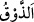

mutlaka onun üzerinde meyve bulurdu. Denizin suyu tatlıydı. Aslanlar sığırlara
saldırmazdı. Mezkûr katil meydana gelince yeryüzünde olanlar değişti. Ağaçlar
dikenlendi, denizin suyu tuzlu ve çok acı bir hale geldi. Hayvanlar birbirlerine saldırdı.
Fakir (Bursevî) der ki:
Amel güzel olunca güller biter;
Çirkin olunca dikenler biter
Amelin iyi de olsa kötü de olsa,
Ne ekersen onu biçersin sonunda
“Ki Allah yaptıklarının bir kısmını onlara tattırsın;” “
(tatmak)” ağızda tadın
bulunmasıdır. Çoğu zaman azab için kullanılır. Buradaki “lâm” illet/sebep bildirmek
içindir. Yâni Allah onların yaptıkları kötülükten dolayı, onlara yaptıkları günahlardan
bir kısmının ve Hak’tan yüz çevirmelerinin cezâsını tattırmak; sıkıntı, darlık ve
musîbetlerle azâb etmek için dünyâlarındaki sebepleri bozdu.
“Bir kısmını” buyrulması, cezânın tamamının ancak âhirette olacağı içindir. “Lâm”ın
âkıbet/sonuç bildirmek için olması da mümkündür. Yâni onlardan bu kötülüklerin zuhûr
etmesinin sonucu bu oldu, demektir. Kötü âkıbetten Allâh’a sığınırız.
“Belki de (tuttukları kötü yoldan)” yâni üzerinde bulundukları şirk, günah, gaflet,
şehvetlerin peşine düşme ve vakitleri zâyi etmekten tevhid, tâat, Hakk’ı taleb ve O’na
kullukta gayret, şerîatı tâzim ile kaçırdıklarına esef etmeye “dönerler.”
Bu ifâdenin benzeri: “Andolsun ki, biz de Fir‘avn’a uyanları ders alsınlar diye
yıllarca kuraklık ve mahsül kıtlığı ile cezâlandırdık.” (el-A‘râf, 7/130) âyetindeki
“ders alsınlar diye/belki de ders alırlar.” ifâdesidir. Fakat onlar ders almamıştır.
Burada Allah Teâlâ’nın kuraklık, meyvelerin ve bitkilerin azalmasına ancak insanların
günahtan dönmesi konusunda kendi tarafından bir lütuf olarak hükmettiğine tenbih
vardır.
Mesnevî’de der ki:
Fazlını ortaya koymak için günahı defalarca örter.
Sonra da adâletini ortaya koymak için o örtüyü kaldırır.
Yaptığın kötü işten pişman olursun,
Samed olan Allah’tan hayâ edersin.
Bilesin ki Allah Teâlâ ma‘sıyetin uğursuzluğu yüzünden bir çok şeyi değiştirmiştir.
İblîs’in sûretini ve ismini değiştirdi. İsmi Hâris ve Azâzîl idi, onu “İblîs” diye
isimlendirdi. Babasının edeb yerine bakıp gülmesi sebebiyle Nuh (a.s.)’ın oğlu Hâm’ın
rengini değiştirdi. Babası Nuh (a.s.) uyuyordu. Kendisine bu durum haber verilince ona
bedduâ etti. Allah Teâlâ da onu siyaha çevirdi. Hind ve Habeşliler onun neslinden
geldi.